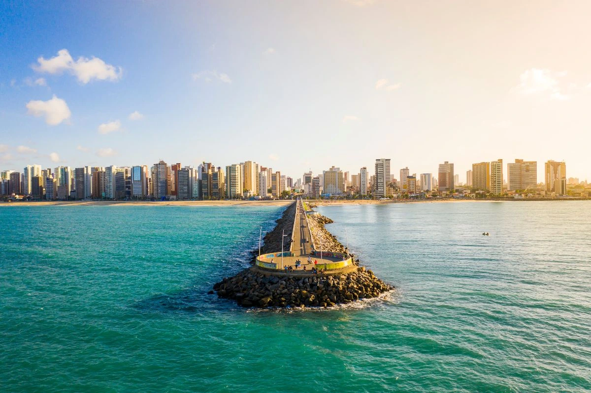

Pubs e bares
Lugares para sair à noite, beber, comer petiscos e encontrar amigos.

Um guia turístico visual para ajudar você a encontrar bons lugares, experiências e opções de entretenimento em Fortaleza.
O RolêFortaleza é um guia turístico visual que irá ajudar você a encontrar a melhor opção para curtir a noite, com acesso a diversos tipos de entretenimento, desde bares e pubs até locais de stand-up.
A proposta do projeto é reunir lugares interessantes da cidade em uma interface fácil de usar, onde você possa avaliar e contribuir para ajudar outras pessoas que buscam um rolê legal.
Lugares para sair à noite, beber, comer petiscos e encontrar amigos.
Opções para curtir Fortaleza perto do mar, com comida e ambiente descontraído.
Locais com música ao vivo, comédia, shows e experiências diferentes.
Volte para a página inicial e confira os locais cadastrados.
Ver rolês